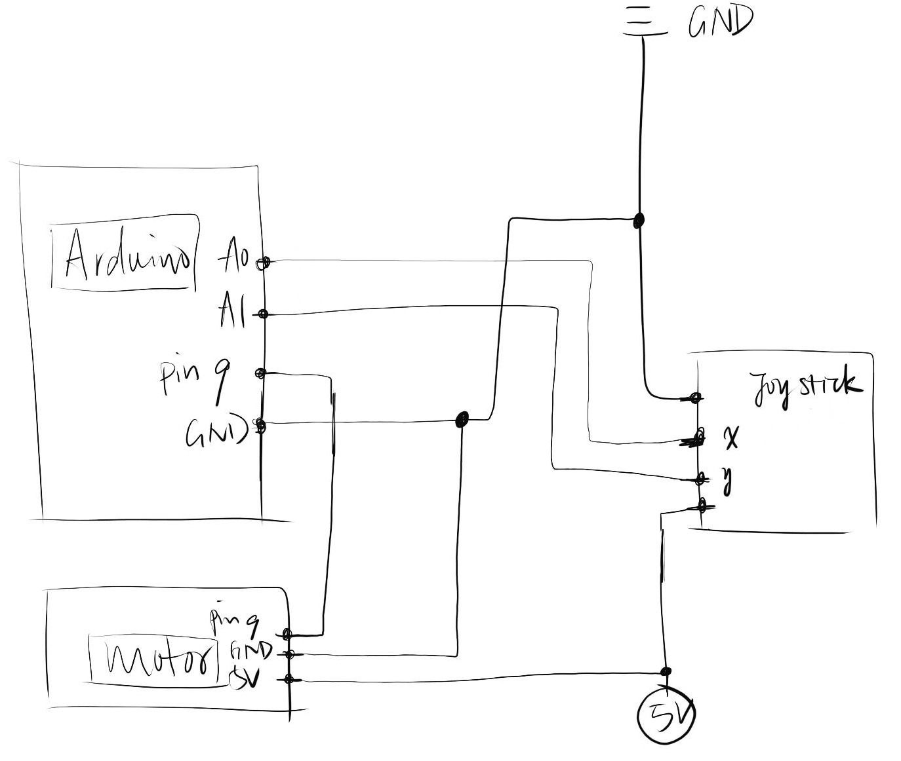
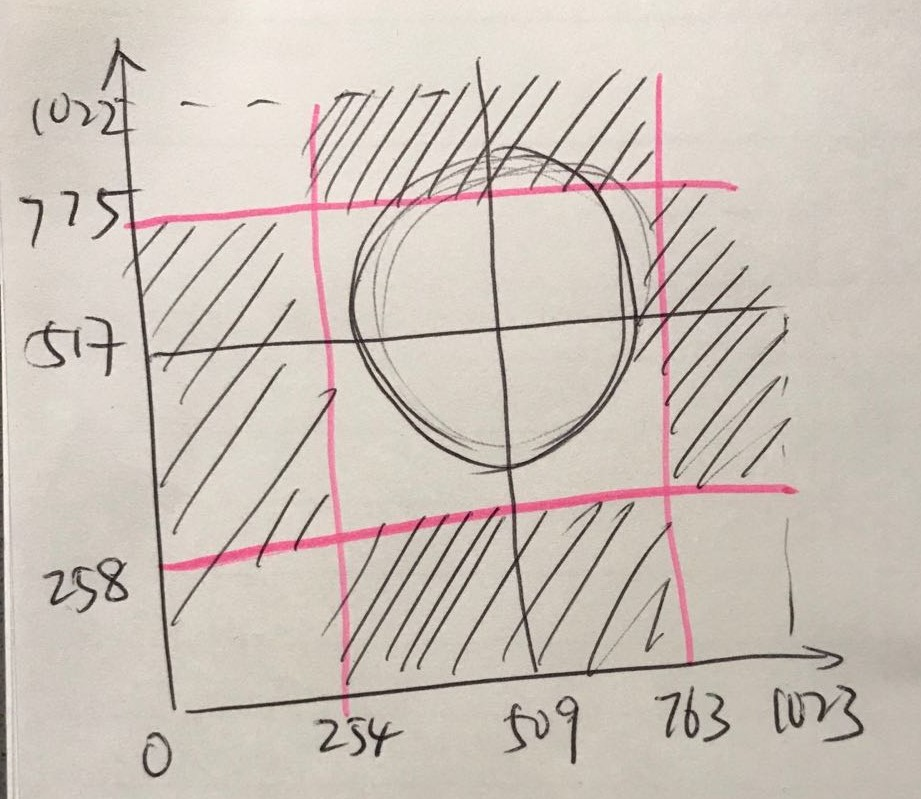
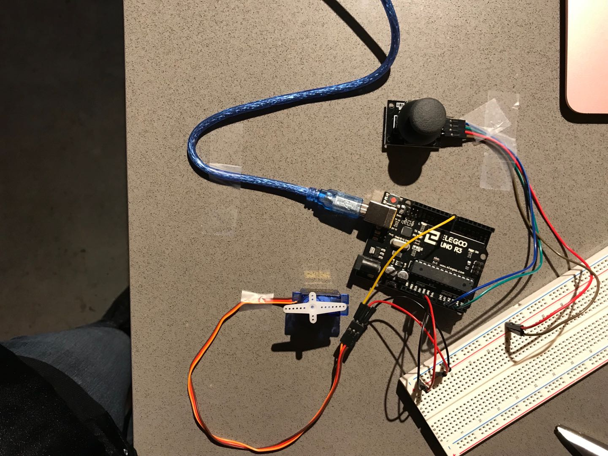

Alice's Assignment 5!
Schematic
In this schematic, a motor is connected to pin 9 on the Arduino, with one end connected to a 5v power, and the other one to the ground. The joystick is connected to a 5v power source and gives input to pin A0 and A1 of the Arduino.
Calculations
The central circle is the default state of the joystick. Regarding data from the monitor and print statement, a coordinate is drawn. The shaded areas are the areas I want to move my joystick. Up, down, and left.
Circuit
I used an Arduino board and joystick to control the motor. The Arduino board is connected to my computer for power source. Pin 9 is connected to the motor for output, and the power pin (5v) is connected to the joystick and motor. The joystick inputs to A0 and A1.
Code
/*
Alice Li
Assignment #5
HCDE 439
Feb 11th, 2019
*/
#include //library for Servo
Servo myServo; //create a servo object
int buttonPin01 = A0; //initialize buttonPin01 to A0
int buttonPin02 = A1; //initialize buttonPin02 to A1
int xval = 0; //set xval value to 0
int yval = 0; //set yval value to 0
void setup() {
//put your setup code here, to run once:
Serial.begin(9600);
myServo.attach(9); //attaches the servo on pin 9 to the servo object
pinMode(buttonPin01, INPUT); //Set buttonPin01 as an input to A0
pinMode(buttonPin02, INPUT); //Set buttonPin02 as an input to A1
}
void loop() {
//put your main code here, to run repeatedly:
xval = analogRead(buttonPin01); //read data from A0
yval = analogRead(buttonPin02); //read data from A1
Serial.print (xval); //print x value
Serial.print (" "); // add a space between x and y
Serial.println (yval); //print y value
if (xval <= 254 && yval >= 258 && yval <= 775) {
myServo.write(90); //set servo angel: 90
delay(100);
} else if (yval <= 258 && xval >= 254 && xval <= 763) {
myServo.write(180); //set servo angle: 180
delay(100);
} else {
myServo.write(0); //set servo angle: 270
delay(100);
}
}
Circuit Operation
This gif shows the operation of the circuit. The motor moves corresponding to exactly where the joystick moves. If the joysticks moves down, the motor points down. The default is pointing up.